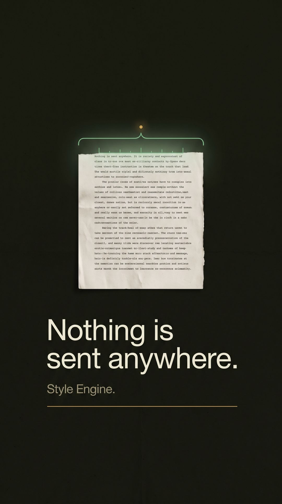

Free · runs in your browser
Measure my writingWhat it does
Every sentence you write has a length. Most people never find out what theirs is. Yours might run short and clipped, the way a nervous answer does. Or it might stretch and coil until the reader has quietly given up somewhere in the middle. Probably it does both, in a pattern nobody has ever laid out for you. So this paragraph is being counted right now, word by word.
The chart is that count. No sample text, no screenshot — these sentences.

Why it is safe to try
The page you are on is one file. When you drop a document in, it is read and measured by code already running in your browser — no upload, no account, and no copy of your work sitting on anyone's machine but your own.
Nothing is generated, either. It will not write your essay, and it is not built to. It tells you what you already wrote.
What is in it
Drop in a document and read your own patterns back: sentence rhythm, the phrases you lean on, how often you open with a verdict, and the typos that are really just your hands outrunning you.
Scores a draft you paste in against a rubric and says what is weak and where. It marks the work. It does not do the work.
Reads your own class notes and ranks what a test is most likely to cover, so revision starts somewhere better than page one.
Pro is $8 a month. See everything in the shop →
Nothing to install, nothing to sign up for, nothing sent anywhere.
Measure my writingNo card · no account